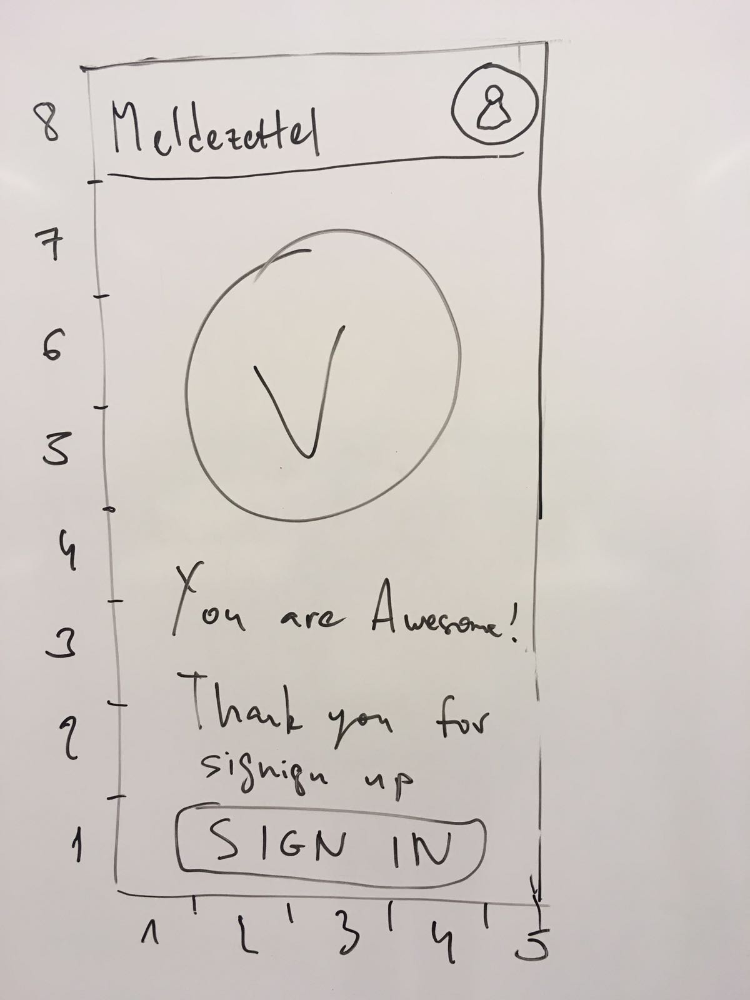

| Mock-Up | Description |
|---|---|
This is the welcome screen. When starting the app, you have the possibility to sign in if you already have a user account or you can create one by using the “Sign-up” button. Furthermore, you can take a look into the “impressum” for further information about the app. |
|
This is the “Sign-Up” -Screen. If you do not have an account so far you can create one here. You have to enter a username, your e-mail and a password. The password has to be entered twice. |
|
|  | After finishing your “Sign-up” you receive a message telling you that your sign up was successful and asking you to sign in. |
The “Sign-In” Screen is used if you already have an account. If you do not have one yet, you can use the “Sign-Up” button to get to the sign-up screen. Furthermore, there is the possibility to recover your password if you forgot it. For that, just use the link saying “ Forgot password?” |
|
If you press the “Forgot password?” button this “Password Recovery” screen will appear. It asks you for your e-mail as well as the username. Press “Recover” to continue. |
|
If both, username and password are correct you will be asked to choose a new password. Enter your new password twice and press “Recover”. Your new password is now active. |
|
After signing in you are asked to choose an activity. You can either create a new record or you can search through already existing records. Furthermore, you can press the “Information”-Button for further legal information considering you record. |
|
Choosing “New Record” will lead to this screen. Here you have to edit each of these three form sections. Each of them holds a different set of information that has to be filled in. Once they are filled out sufficiently, the corresponding field, e.g. 1, will be marked or highlighted green. |
|
This is what the form section for “Personal Information” will look like. Here you will enter first name, last name, … etc. By pressing “Next” you will come to the form section “New Address”. |
|
This is the screen where the user enters his new address. With the “Current location”-button it is possible to let these fields be auto-filled. If this is not your new main residence this screen will appear again slightly modified where you are prompted to enter your main residence. |
|
This is the screen to enter your old address. As with the “New Address”-section it is possible to let them be auto-filled. |
|
When all of your data is added you will be given an overview of the data you entered. Using the “Back”-Button you will be able to change your data. Using the “Done”-Button will save your Record. |
|
If you use the “Find record” button on the main activity the app will search for every record you made so far. You can also use a filter either considering address or date. Furthermore, you can choose a found entry. |
|
If you chose one of the found records you will be shown this overview and you are also able to edit it. |
|
Furthermore, a screen showing your user account will be implemented. Here you can see your profile picture, username, e-mail and change your password. |
|
If you click the most left button on the top of the app you will come to this screen. It gives you a general overview of what can be done with this app. |